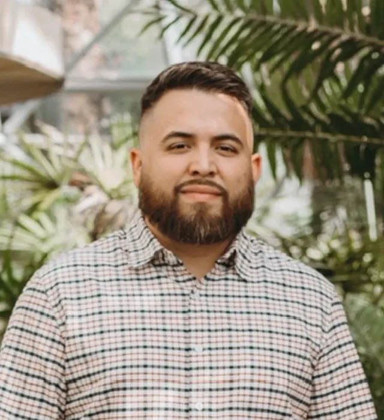
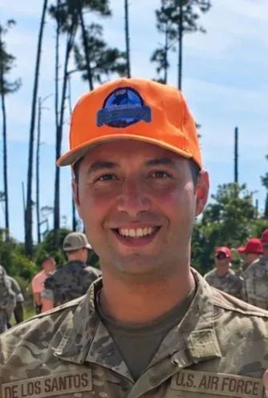

Texas Power-Pro Enterprise is family-owned, founded by Kataliah and run alongside her brothers Daylon and Xavier. We cover Austin, San Antonio, Corpus Christi, and the Rio Grande Valley — standby and prime power generator testing, not utility-scale or data center work, so every job gets the same level of attention. We are expanding to 2000kW capability in early 2027.
Founded TPPE and runs day-to-day operations, working closely with her brothers Daylon and Xavier as the company grows.

Brings years of Caterpillar experience, including six years with Holt CAT Parts and has worked with Ziegler CAT's Power Systems Field Service Team — background in field service operations, parts support, and equipment coordination.

Honorably discharged from the U.S. Air Force after six years in power generation, with hands-on experience in generator systems, electrical power production equipment, troubleshooting, and maintenance.
A generator that's never carried real load is a generator nobody's actually tested. We built TPPE to give contractors, facility managers, and generator dealers a straightforward way to load-test standby and prime power equipment without owning a load bank themselves.
Specialized, responsive, technically competent, and local. Need a unit this week? Call 210-706-0962 for current availability.